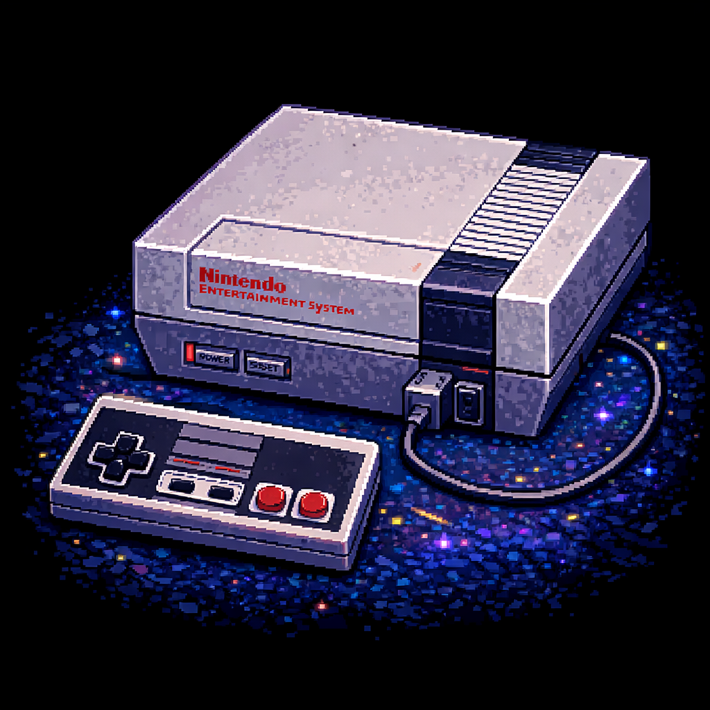

<main>
  <div class="content-layout">

    <section class="main-column">
      <div class="panel-box">
        <h2>A NES története</h2>

        <p>A Nintendo Entertainment System (röviden: NES) egy klasszikus 8 bites játékkonzol, ami eredetileg Family Computer vagy röviden FamiCom néven jelent meg Japánban 1983-ban, majd két évvel később az európai és észak-amerikai piacokon is.</p>

        <p>Az 1980-as években nagy sikert arató játéktermi játékok hatására a Nintendo úgy döntött, hogy egy cartridge (kazetta) alapú otthoni konzolt fog kiadni. Az első példányok 1983. július 15-én jelentek meg Famicom címen, tizenötezer jen egységáron, három játéktermi játék átportolásával csomagolva.</p>

        <p>A Famicom elterjedése nem ment zökkenőmentesen: az első példányok egy hibás chip miatt rendszeresen lefagytak. A Nintendo visszahívta őket, és új alaplappal kezdte őket forgalmazni, minek köszönhetően 1984 végére már a legjobban fogyó konzol lett Japánban.</p>

        <p>A sikeren felbátorodva Észak-Amerika területére is kiterjedt a forgalmazás. 1985-ben a CES-en hivatalosan is bemutatták a konzolt, melynek árusítása még abban az évben meg is kezdődött.</p>

        <p>A kilencvenes évek elején beköszöntött a 16 bites korszak, a Sega pedig Mega Drive nevű konzoljával komoly előnyre tett szert a Nintendóhoz képest. Ezért a Nintendo a továbbiakban főként a SNES-re koncentrált, noha az évtized első felében még jelentek meg új játékok a NES-re is.</p>
      </div>
    </section>

    <aside class="side-column">
      <div class="console-card-panel">
        

        <h2 class="console-title">Nintendo NES</h2>
        <p class="console-subtitle">A klasszikus 8 bites korszak ikonja</p>

        <div class="quick-stats">
          <div class="quick-stat">
            <span class="stat-label">Generáció</span>
            <span class="stat-value">3. generáció</span>
          </div>
          <div class="quick-stat">
            <span class="stat-label">Típus</span>
            <span class="stat-value">Otthoni konzol</span>
          </div>
          <div class="quick-stat">
            <span class="stat-label">Adathordozó</span>
            <span class="stat-value">Kazetta</span>
          </div>
        </div>

        <table class="console-specs">
          <tr>
            <td>Megjelenés éve</td>
            <td>1983 / 1985</td>
          </tr>
          <tr>
            <td>Architektúra</td>
            <td>8-bit</td>
          </tr>
          <tr>
            <td>Felbontás</td>
            <td>256 × 240</td>
          </tr>
          <tr>
            <td>Régiók</td>
            <td>NTSC-J / NTSC-U / PAL</td>
          </tr>
        </table>
      </div>
    </aside>

  </div>
</main>
